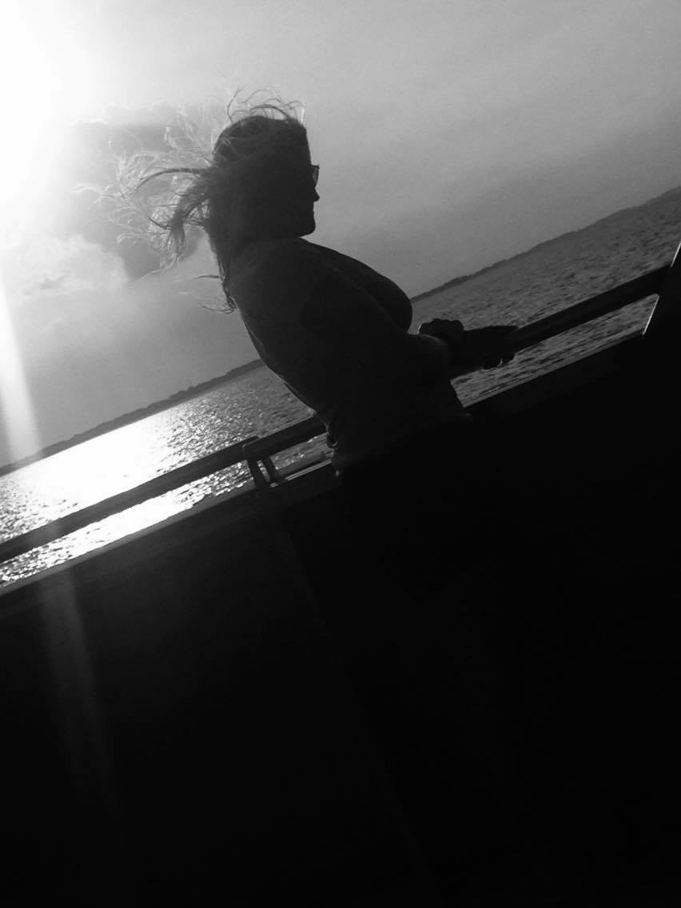
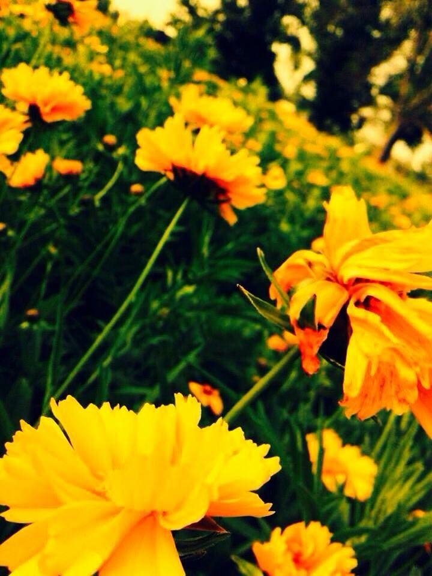
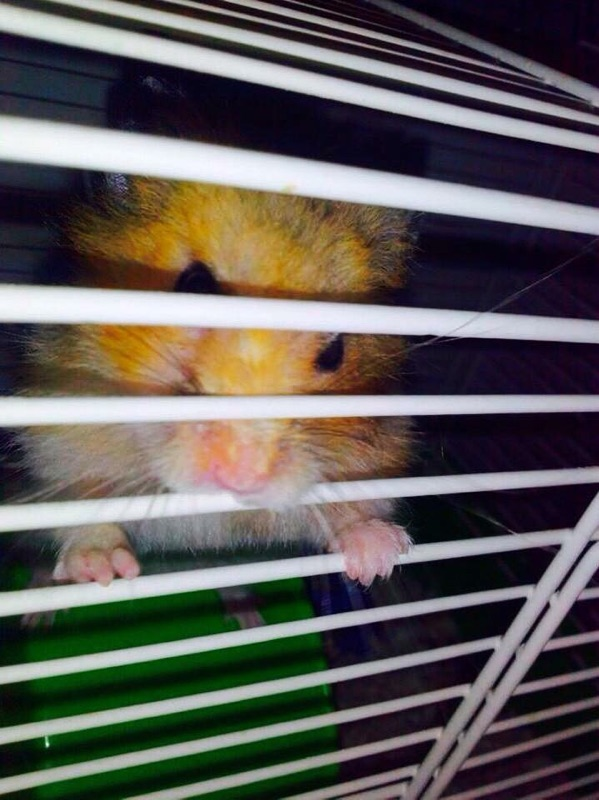
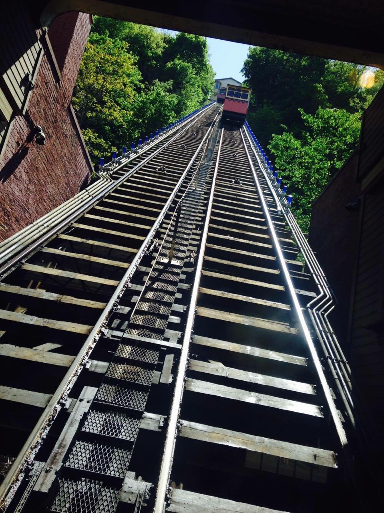
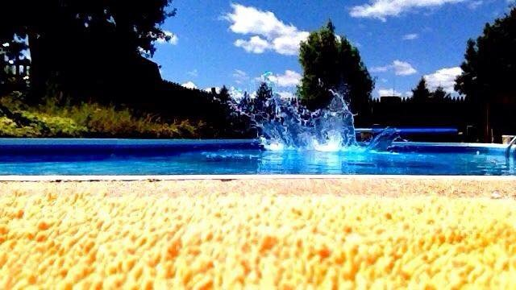

This picture was taken when my family and I were on a boat to
Put-in-Bay for the weekend. It was sunset and my mom was
just standing there looking at the water. I thought it
looked beautiful so I told her to stay where
she was and I took the picture.

So this picture was taken in Beavercreek, when I was going
for a nice run at the park with my mom. As we we
ran there was a patch of yellow flowers, my
mom had to stop and wait for me to
take this picture.

This picture was taken at my house in Troy. This is
Blizzard, the hamster I had. He was standing
on the top of his wheel and he looked
so cute. I just had to take the
picture and it turned
out pretty good.

This picture was taken in Pennsylvania. It was a city view
of Pittsburg, Pennsylvania from a mountain.
I was with my mom and her boyfriend
Chip. I did get a little scared though.

This picture was taken in Michigan at my
Nanas house. My little sister Grace and I
were swimming and that was the day she got
brave enough to jump off the diving board. I
Layed on the gound and told her to jump in, and that's
how I got this picture.
This picture was taken in Florida when my boyfriend and I
decided to explore a lighthouse. I took this picture
right before going up. I was scared the whole
time and almost fell down the stairs, I will
never do this again but I took a nice picture